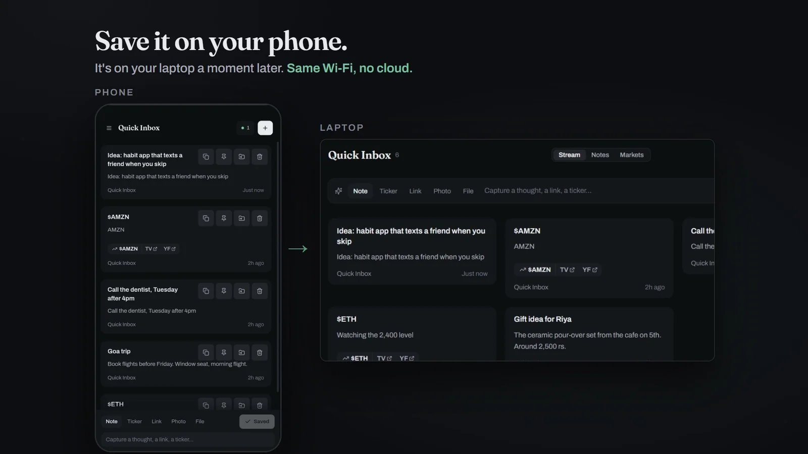
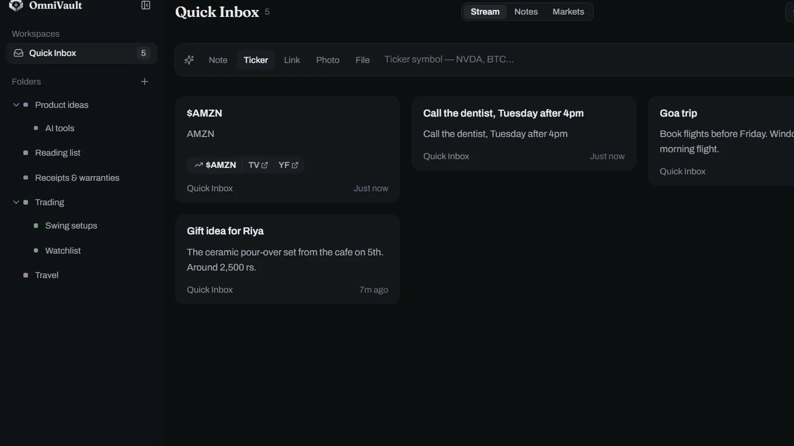
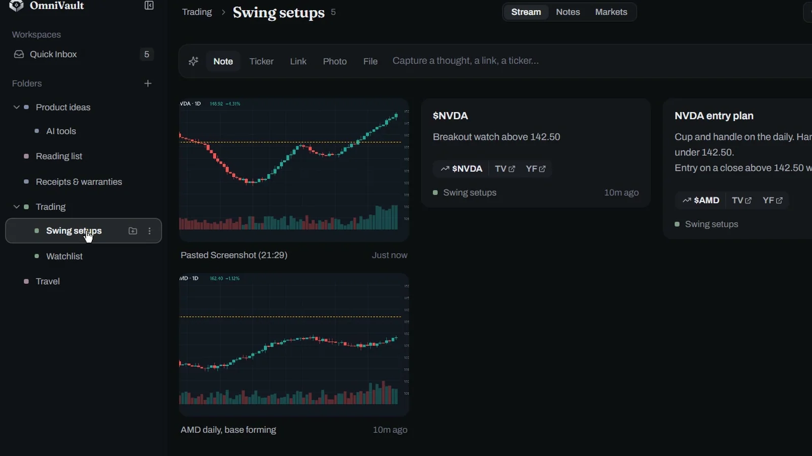
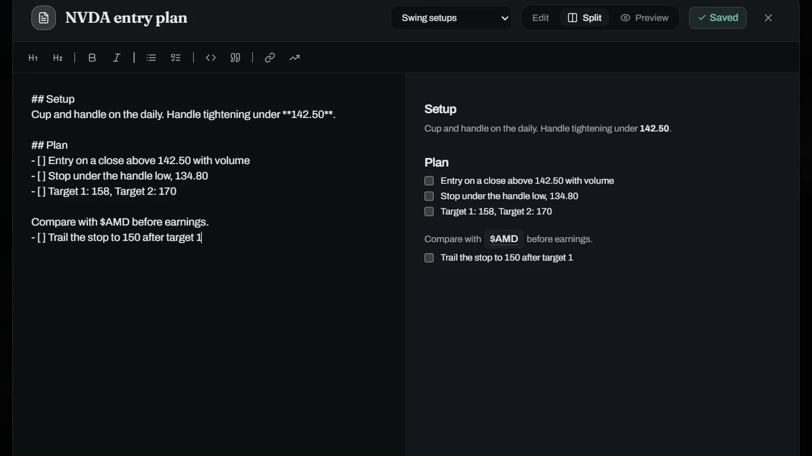

Your notes on all your devices. No cloud.
OmniVault is a free, open-source notes app that syncs your phone and laptop over your own Wi-Fi. Save a note, a link or a screenshot on one, and it's on the other a moment later.
Your devices talk to each other. Nothing in between.
Every device keeps its own complete copy. When two of them share a network, they find each other and swap what changed.
Install it twice
On your Android phone and your Windows PC. No sign-up.
Connect once
Tap Connect on one device and Allow on the other.
Just save
On the same Wi-Fi or your phone's hotspot, everything syncs on its own.
Save it on your phone. It's already on your laptop.
No more messaging yourself on WhatsApp. The laptop doesn't even need to be on when you save; it catches up the next time both devices share a network.

Notes, links, tickers and screenshots, in a second.
Type into the capture bar or paste a screenshot with Ctrl+V. Stock and crypto tickers become one-tap links to TradingView and Yahoo Finance.

Folders inside folders, not one endless chat.
Drag anything from the inbox into nested folders. Trades, receipts, reading lists and ideas each get their own place.

Markdown with a live preview.
Checklists, headings and quotes, saved as you type. Back up everything as plain Markdown files you can read without the app.

What it doesn't do.
No sync over the internet
Devices sync when they share a network, not from across town. That's the trade for keeping it all off the internet.
Sync isn't encrypted yet
It's built for your home Wi-Fi or your own hotspot. Avoid using it on public Wi-Fi for now.
No native iPhone or Mac app
They can still use the full app from a browser on the same network, with nothing to install.
Questions
How do I get notes from my Android phone to my Windows PC without the cloud?
Install OmniVault on both, put them on the same Wi-Fi or the phone's hotspot, and tap Connect. Anything you save on one shows up on the other, directly over your network.
How is it different from LocalSend or KDE Connect?
Those send a file from one device to another while both are open. OmniVault keeps a synced, organised vault: the other device can be off when you save something, and it catches up later.
Does it work without internet?
Yes. It only needs the devices to share a local network. The only request that goes to the internet is the update check, and it runs only when you press the button.
Where is my data stored?
In a SQLite database and a media folder on each of your devices. Nothing is stored on a server, because there isn't one.
Is it really free?
Yes. It's open source under the MIT license, with no ads, no tracking and no paid tier.